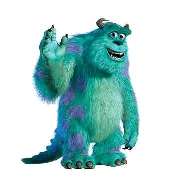

Sulley
James Patrick Sullivan (better known as Sulley) is the protagonist of the 2001 Disney•Pixar animated film Monsters, Inc. and the deuteragonist of its 2013 prequel. He was a renowned scarer at Monsters, Inc